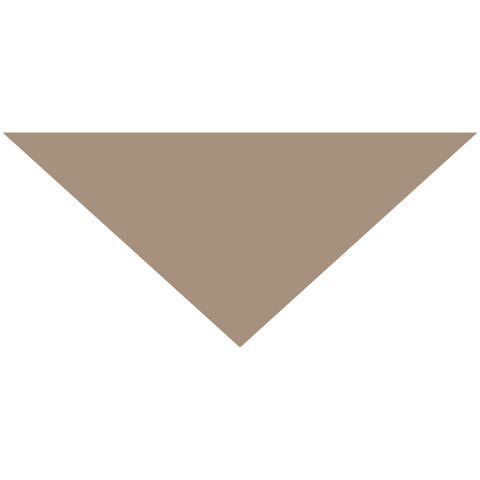

<!-- ============================================ -->
<!--                 Navigation                   -->
<!-- ============================================ -->

<header id="cs-navigation">
    <div class="cs-container">
        <!--Nav Logo-->
        <a href="/" class="cs-logo" aria-label="back to home" tabindex="0">
            
            
        </a>
        <!--Navigation List-->
        <nav class="cs-nav" role="navigation">
            <!--Mobile Nav Toggle-->
            <button
                class="cs-toggle"
                id="mobile-menu-toggle"
                aria-expanded="false"
                aria-controls="cs-expanded-ul"
                aria-label="mobile menu toggle"
                tabindex="0"
            >
                <div class="cs-box" aria-hidden="true">
                    <span class="cs-line cs-line1" aria-hidden="true"></span>
                    <span class="cs-line cs-line2" aria-hidden="true"></span>
                    <span class="cs-line cs-line3" aria-hidden="true"></span>
                </div>
            </button>
            <!-- We need a wrapper div so we can set a fixed height on the cs-ul in case the nav list gets too long from too many dropdowns being opened and needs to have an overflow scroll. This wrapper acts as the background so it can go the full height of the screen and not cut off any overflowing nav items while the cs-ul stops short of the bottom of the screen, which keeps all nav items in view no matter how mnay there are-->
            {# This also allows for easy substitution of CodeStitch navigations. Just replace the .cs-ul-wrapper in the new navigation with this one to have full eleventyNavigation support #}
            <div class="cs-ul-wrapper">
                <ul id="cs-expanded" class="cs-ul">
                    {% set navPages = collections.all | eleventyNavigation %}

                    {# Loop through all pages with a eleventyNavigation in the frontmatter #}
                    {% for entry in navPages %}

                        {# Define a hasChild variable to make it easier to test what navigation items are have child dropdown pages #}
                        {% set hasChild = entry.children.length %}

                        {# Check the frontmatter for hideOnMobile/hideOnDesktop. Form a list of classes to be joined when the item is rendered #}
                        {% set hideClasses = [] %}
                        {% if entry.hideOnMobile %}
                            {% set hideClasses = (hideClasses.push("cs-hide-on-mobile"), hideClasses) %}
                        {% endif %}
                        {% if entry.hideOnDesktop %}
                            {% set hideClasses = (hideClasses.push("cs-hide-on-desktop"), hideClasses) %}
                        {% endif %}

                        {# If this page is a dropdown, give it the appropriate classes, icons and accessibility attributes #}
                        <li
                            class="cs-li {% if hasChild %}cs-dropdown{% endif %} {{ hideClasses | join(" ") }}"
                        >
                            {# If the page has child dropdown pages, render it as a <button> tag with the appropriate dropdown HTML #}
                            {% if hasChild %}

                                {# Check to see if the user's current page is one of the child pages. If so, apply the cs-active class to the dropdown parent #}
                                {% set activeClass = "" %}
                                {% for child in entry.children %}
                                    {% if child.url == page.url %}
                                        {% set activeClass = "cs-active" %}
                                    {% endif %}
                                {% endfor %}

                                {# Render the <button> with the active class, dropdown icon and child links #}
                                <button
                                    class="cs-li-link cs-dropdown-button {{ activeClass }}"
                                    aria-expanded="false"
                                    aria-controls="dropdown-{{ entry.key }}"
                                    aria-label="dropdown-{{ entry.key }}"
                                >
                                    {{ entry.key }}
                                    
                                </button>

                                {# Dropdowns have another ul/li set up within the parent li, which gets rendered in the same way as a normal link #}
                                <ul
                                    class="cs-drop-ul"
                                    id="dropdown-{{ entry.key }}"
                                >
                                    {% for child in entry.children %}
                                        <li class="cs-drop-li">
                                            <a
                                                href="{{ child.url }}"
                                                class="cs-li-link cs-drop-link"
                                                >{{ child.key }}</a
                                            >
                                        </li>
                                    {% endfor %}
                                </ul>
                            {% else %}
                                {# Normal pages are rendered as <a> tags, in the normal way you'd expect #}
                                <a
                                    href="{{ entry.url }}"
                                    class="cs-li-link {% if entry.url == page.url %}cs-active{% endif %}"
                                    {% if entry.url == page.url %}aria-current="page"{% endif %}
                                >
                                    {{ entry.key }}
                                </a>
                            {% endif %}
                        </li>
                    {% endfor %}
                </ul>
            </div>
        </nav>
        <a href="/contact" class="cs-button-solid cs-nav-button">Book a call</a>
        <!--Dark Mode toggle, uncomment button code if you want to enable a dark mode toggle-->
        <button
            id="dark-mode-toggle"
            aria-label="dark mode toggle"
            tabindex="0"
        >
            
            
        </button>
    </div>
</header>
